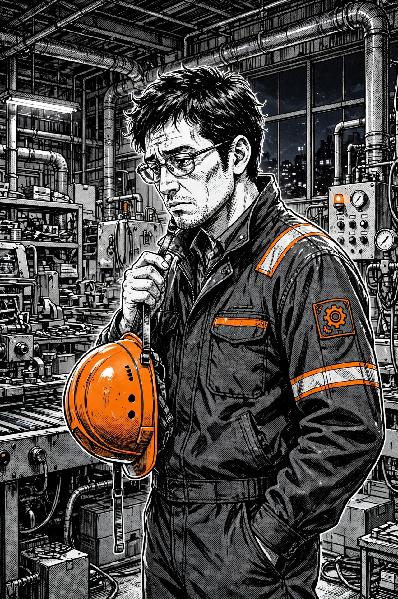
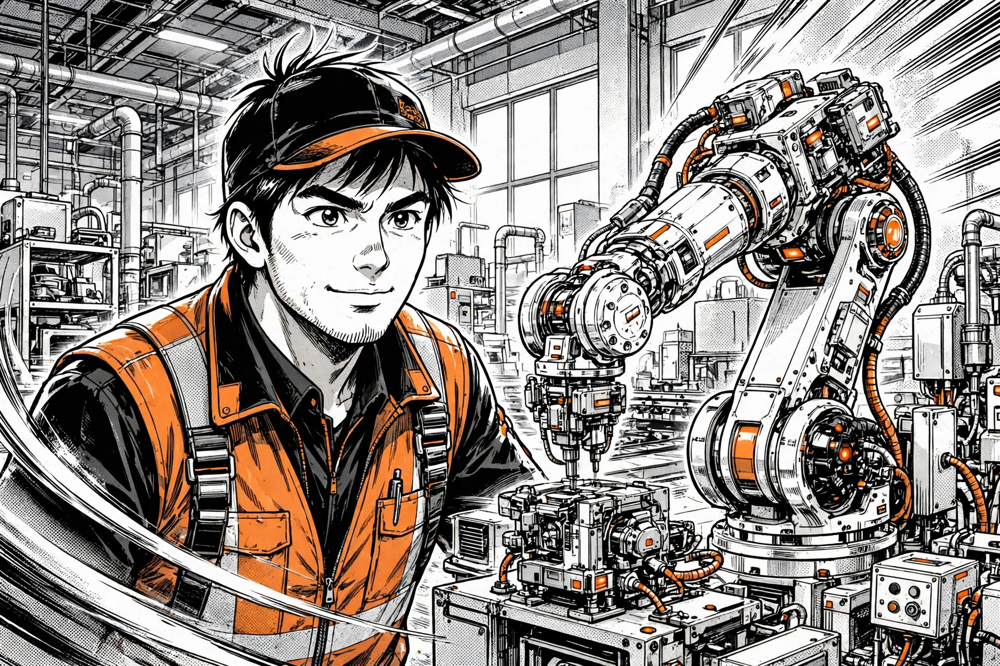

第1話
昇給3,000円
夜勤明け／給与明細／同僚と課長／疲れて帰る家 ― 全5コマ
あらすじ： 夜勤のトラブルを一人で収めた翌日、給与明細に載っていた昇給は月3,000円。歩留まり改善は「評価対象外」。技術を磨いても評価されない閉塞感が、静かに積もっていく。
第1話の終わり： 辞める決意はない。あるのは「このままでいいのか」という問いだけ。その問いが、次の行動につながっていく。
生産技術10年。ラインを止めない工夫も、歩留まりを上げた改善も、自分では「当たり前」だと思っていた。でも、今の会社の評価と給料は、本当に見合っているんだろうか——。

申し込むと、まず確認のお電話がかかってきます。いきなり転職を決める必要はありません（流れは下で正直に説明しています）。
🎲 まだ転職は考え中…という方は、まず職業人生ゲームで遊んでみる →これは特定の誰かの体験談ではなく、製造業の技術職によくある悩みをマンガにしたフィクションです。成功や年収アップを約束する話ではありません。結末は「転職して成功」ではなく、「選択肢を知り、自分の条件で一歩踏み出す決断」までです。作中に登場する求人や条件は物語上の例であり、実際の求人を保証するものではありません。
夜勤明け／給与明細／同僚と課長／疲れて帰る家 ― 全5コマ
あらすじ： 夜勤のトラブルを一人で収めた翌日、給与明細に載っていた昇給は月3,000円。歩留まり改善は「評価対象外」。技術を磨いても評価されない閉塞感が、静かに積もっていく。
大手転職サイトへの登録／電話／ズレた紹介求人 ― 全5コマ
あらすじ： 相場を知りたくて登録した大手転職サイト。だが担当者に「生産技術」の話が通じず、届いたのはライン作業や検品の求人ばかり。10年の経験が『工場勤務』の一言にまとめられていく。
ゲーム「7千万分の1」／対象チェック／申込と電話 ― 全4コマ
あらすじ： 休憩室で同僚が遊んでいた職業人生ゲーム「7千万分の1」が、思わぬ入口になる。製造業特化のメーカーズジョブを知り、対象チェックを経て申し込むと、電話の相手は最初から話が通じた。
面談準備のメモ／無料面談／市場価値と非公開求人 ― 全5コマ
あらすじ： 前夜に「今の年収／担当設備・工程／変えたい条件」をメモして臨んだ無料面談。担当者は転職を迫らず、経験の棚卸しと市場での評価のされ方を伝える。渡されたのは答えではなく、判断の材料だった。

届いた求人／条件への迷い／休憩室の声 ― 全4コマ
あらすじ： 面談の数日後、合いそうな求人が紹介された。夜勤なし、立上げ中心——条件は悪くない。むしろ今より良い部分もある。それでも踏み切れないタカハシの前に、「迷い」の正体が少しずつ見えてくる。
家族に話す／課長への相談／比べられるということ ― 全5コマ
あらすじ： 求人のことを、家族に全部話した。そして週明け、10年言えなかった「夜勤と評価の相談」を課長に切り出す。残るにしても動くにしても、「比べた上で選ぶ」ための材料がそろっていく。
応募の電話／仲間と家族へ／朝の工場 ― 全4コマ
あらすじ： 数週間で、タカハシの状況そのものは何も変わっていない。変わったのは、自分の経験を言葉にできて、選択肢を知って、「比べた上で決める」側に立ったこと。その一歩を描く最終話。
メーカーズジョブは「誰でもOK」のサービスではありません。まず3つの質問にタップで答えてください。結果に応じて、次に進むボタンを表示します。
Q1.製造業（メーカー）で働いた経験がありますか？
Q2.技術職の経験がありますか？（設計／生産技術／品質保証／研究開発／組み込みなど）
Q3.今の働き方や評価のされ方を、変えたいと思いますか？
製造業の技術職経験者向けのサービスなので、話が通じる担当と無料面談ができます。申込後は確認のお電話がかかってきます。その前提で進んでください。
無料キャリア面談に申し込む入力は氏名・生年月日・メール・電話の4項目メーカーズジョブは製造業の技術職経験者が対象で、対象外の場合は面談をご案内できません。無理に申し込むより、まずは軽く遊べる職業シミュレーションゲームで「仕事と人生」について考えてみるのがおすすめです。
ゲーム「7千万分の1」で遊んでみる最初の仕事は選べなかった。でも、次の仕事は自分で選べる。3問すべてに答えると、結果がここに表示されます。回答はこのページの中だけで使われ、保存・送信されません。
対象外の方が申し込んでも、面談をご案内できない場合があります。時間の無駄を避けるためにも、このチェックを挟んでいます。
AIや自動化で、単純作業・定型作業は置き換えが進むと言われています。一方で、設備の異音に気づく、現場の条件に合わせて段取りを組み替える、トラブルの原因を切り分ける——こうした現場と設備を知る技術者は代替しにくい、という見方があります。
だからこそ大事なのは、「今いる会社の評価」だけで自分の価値を決めてしまわないことです。外の市場ではどう見えるのかを知るだけでも、これから学ぶべきこと・伸ばすべき経験が見えてきます。
急ぐ理由があるとすれば、煽りではなく事実の話です。一般に、年齢が若いほど応募できる求人の幅は広い傾向があります。そして無料相談は、転職しなくても「今の自分の市場価値」という判断材料が手に入ります。知るのが早いほど、選び直す余地は大きくなります。
面談で「成功が約束される」わけではありません。分かるのは、次の3つです。
今の経験・スキルが、他のメーカーではどの水準で評価されるのか。年収の目安も含め、第三者の視点で棚卸しできます。
製造業出身の方におすすめの、独自の限定求人があると案内されています。一般の求人サイトに出ない選択肢が見えることがあります。
製造業に特化した担当者だから、生産技術・設計・品質の話を一から説明し直す必要がありません。話が通じた上で相談できます。
メーカーズジョブの案内では「平均年収UP 143万円」と紹介されています。これは 2026年1〜3月に、年収が上がって内定を承諾した人だけの平均 です。全員が上がる数字ではなく、年収が変わらなかった人・転職しなかった人は含まれていません。目安の一つとして受け取ってください。
「申し込んだら何が起きるか」を先に全部書いておきます。特に、電話がかかってくることは隠しません。
氏名・生年月日・メールアドレス・電話番号を入力して送信します。履歴書のアップロードはこの時点では不要です。
申込後、担当から電話連絡があります。本人確認と、面談日程の相談のためです。⚠ 申込＝電話が来る、と思ってください。知らない番号でも出られるよう準備を。
電話で都合を合わせて、無料キャリア面談の日時を決めます。在職中の方は、仕事の都合も含めて相談してください。
これまでの経験と希望を話し、市場価値や合いそうな求人の考え方を聞きます。面談を受けたからといって、転職しなければならないわけではありません。
「もっと詳しく知りたい」と思えたら、その先へ。思えなければ、そこで終わりにしても構いません。
面談は「試される場」ではありません。でも、この3点をメモしておくだけで、市場価値の話がぐっと具体的になります。スマホのメモで十分です。
「7千万分の1」は、329の職業からランダムに最初の仕事が決まり、転職しながら一生のキャリアを生きる無料のブラウザゲームです。就職が“運”だったあの感覚を、まず遊んで思い出してみてください。
ゲーム「7千万分の1」を遊ぶ →転職するかどうかは、聞いてから決めればいい。対象に当てはまる製造業の技術職の方なら、無料面談で「今の自分の市場価値」だけでも持ち帰れます。
無料キャリア面談に申し込むメーカーズジョブ公式フォーム｜入力4項目申込後、確認のお電話がかかってきます。その前提でどうぞ。